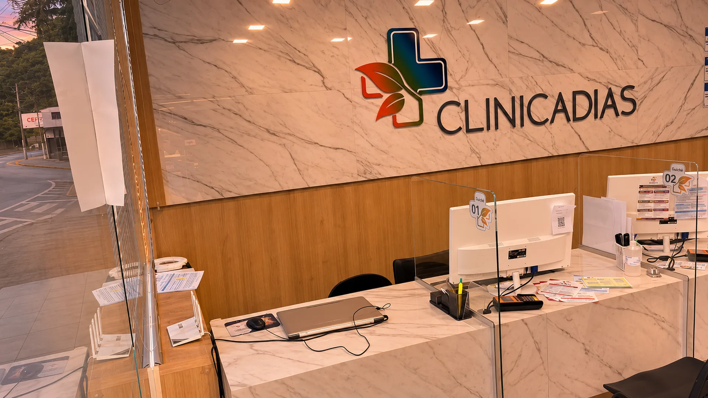

Início / Atendimento
Atendimento
Tudo o que você precisa saber antes de vir à clínica.
Como agendar, o que levar, como chegar e quem atende cada convênio.
Como agendar
O agendamento é feito por telefone, direto com a unidade.
Timóteo
(31) 3849-6156
Rua Cento e Vinte e Oito, 14 · Santa Maria. Segunda a sexta, das 8h às 18h.
Coronel Fabriciano
(31) 99760-0755
Rua Pedro Nolasco, 107 · Centro.
Ipatinga
(31) 99745-4281
Avenida Brasil, 700 · Iguaçu. Das 8h às 18h.
No dia da consulta
O que levar
- Documento
- Documento oficial com foto
- Convênio
- Carteirinha do plano ou do cartão de benefícios, se for usar
- Pedidos
- Pedido médico, quando for fazer exame
- Histórico
- Exames anteriores e a lista dos remédios que você usa

Como chegar e acessibilidade
A unidade de Timóteo tem duas entradas, e as duas recebem quem tem mobilidade reduzida.
-

Recepção 1 · Rua 128 Estacionamento na porta
Vagas em frente ao prédio de vidro, com vaga reservada para pessoa com deficiência.
Como chegar (abre o Google Maps) -

Portaria 2 · Av. Treze Escada e rampa
Entrada com escada e rampa de acesso. Lá dentro, uma rampa com corrimão leva até a sala de espera e os consultórios.
Ver o caminho em 3D -
Antes de vir
Conheça a clínica por dentro
Ande da portaria até os consultórios em 3D, feito a partir da planta da clínica.
Fazer o passeio
Dúvidas frequentes
As perguntas que a recepção mais ouve. Se a sua não estiver aqui, ligue.
Como faço para agendar uma consulta?
Ligue para a unidade mais perto de você: Timóteo (31) 3849-6156, Coronel Fabriciano (31) 99760-0755 ou Ipatinga (31) 99745-4281.
A clínica atende o meu convênio?
São 16 planos e cartões aceitos, como Bradesco Saúde, Cassi, Cemig Saúde, SulAmérica, Usisaúde e CardFácil. Veja a lista completa. Na hora de agendar, a equipe confirma a cobertura do seu plano.
Como vejo o resultado dos meus exames?
Pelo portal do paciente, no celular ou no computador. Veja o passo a passo.
Quais especialidades a clínica tem?
São 29, entre elas clínica geral, cardiologia, pediatria, ginecologia e obstetrícia, ortopedia, dermatologia e odontologia. Ver todas e o que cada uma cuida.
É uma emergência. Posso ir até a clínica?
Em caso de emergência, ligue 192 (SAMU) ou procure o pronto-socorro mais próximo. Os canais da clínica não atendem emergências.